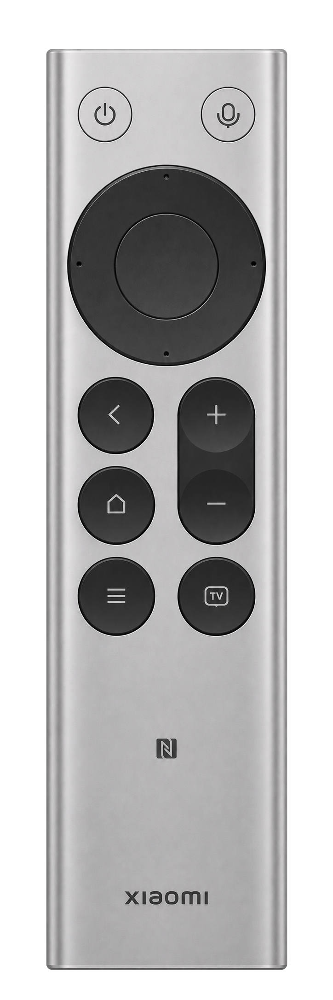

0.0.1
已适配的蓝牙遥控器，可用于应用切换、媒体选择和常用 Mac 操作。
无限遥控器资源库从添加型号、授权到验证第一颗按键。把当前状态、下一步和配置范围放在用户做决定的位置。
查看逐页评审与验收标准 ↗首次使用
每次打开工作台，都可以继续未完成的步骤。

默认配置 · 编辑后另存
| 按键 | 单击 | 双击 | 长按 |
|---|---|---|---|
| 切换显示器 | 无操作 | 锁定屏幕 | |
| Codex 听写 | 不支持 | 不支持 | |
| Return | 无操作 | 无操作 | |
| Esc | 无操作 | 无操作 | |
| 媒体应用选择器 | 无操作 | 无操作 |
0.0.1
已适配的蓝牙遥控器，可用于应用切换、媒体选择和常用 Mac 操作。
无限遥控器资源库清除搜索，查看当前订阅源中的全部型号。
移除订阅源时，已安装的遥控器仍可使用。
在预览中可看到应用排列和初始焦点。预览不写入配置，也不启动媒体应用。
操作示例 · 切换演示状态，或从「首次使用」进入资源库并添加型号。草案使用示例数据。
安装成功能继续配置。区分配对、监听、执行与诊断，验证收到实体按键后才标记通过。
配置切换进入页头，草稿状态靠近保存。设置回到应用菜单，诊断与权限在问题发生处可达。
补齐最小窗口、英文长文案、浅色与深色、键盘焦点与读屏。再调整留白、对比和浮窗控制。